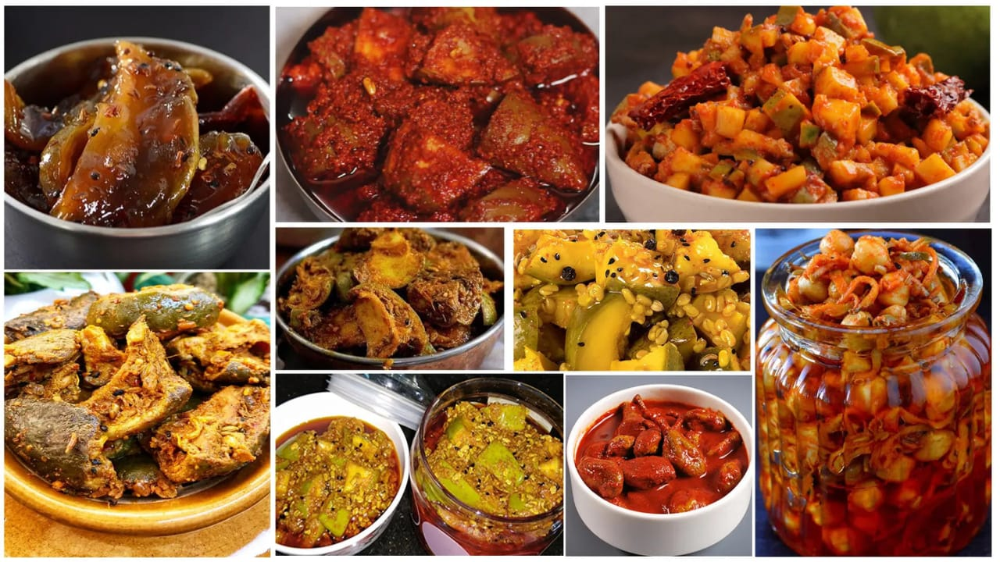

| ભજીયાં એ વિવિધ શાકને ચણાના લોટ (બેસન)ના ખીરામાં લપેટીને બનતું એક તળેલું ફરસાણ છે. આ વાનગી ઝડપથી બની જાય છે માટે કોઈ મહેમાન આવ્યાં હોય ત્યારે ગૃહીણીઓ બજીયાંને તાજા નાસ્તા તરીકે પ્રાધાન્ય આપે છે. ભજીયાંમાં કદની દ્રષ્ટીએ મુખ્ય ભાગ શાક કે ઘટક તત્વનો હોય છે અને ખીરું તેની સપાટીને ઢાંકે છે. આ સિવાય જો ચણાના લોટના ખીરાંમાં અમુક ભાજી આદિને ઉમેરીને લખોટી જેવા ભજીયા બને છે તેને ડબકાં કહે છે. આ વાનગીને નાસ્તા તરીકે, ભોજનમાં ફરસાણ તરીકે ખવાય છે. વરસતાં વરસાદમાં કાંદા કે અન્ય ભજીયાં ખાવાને એક લહાવો મનાય છે. મુંબઈ જેવા શહેરોમાં વડાપાવની જેમ ભજી-પાવ પણ ખવાય છે. ખીરું એ ભજીયા નો મહત્વનો ભાગ છે જે ભજીયામાં સ્વાદ આપે છે. ચણાનો લોટ, મીઠું, સાકર(ખાંડ),સૂકું લાલ મરચું, હળદર, સોડા-બાય-કાર્બ અને ગરમ તેલનું મોણ એ ખીરાંના મુખ્ય ઘટક તત્વો હોય છે. સ્વાદ અનુસાર આ ઘટક તત્વો ઓછા વધુ કરી શકાય છે. ખીરામાં પલાળેલા પૌંઆ, ચોખાનો લોટ કે અન્ય પદાર્થો ઉમેરીને ભજીયાને કરકરાં બનાવી શકાય છે. |
ભજીયા |

અથાણા |
અથાણું કે અથાણાં એ ભારતીય અને ગુજરાતી ભોજનનું એક ખાસ અંગ છે. અથાણાંં મોટા ભાગે ફળ અને શાકભાજીને, તેલ અથવા લીંબુ કે અન્ય ખાટાં પાણી, મીઠું(લવણ) અને વિવિધ મસાલાઓના ઉપયોગ વડે, આખું વર્ષ સાચવી રાખવાની એક પ્રક્રિયા છે. ઘરે બનતા અથાણાં ઉનાળામાં બનાવાય છે, તેને લાંબો સમય સુધી સૂર્યનાં તાપમાં સુકવવામાં આવે છે. ત્યાર પછી કાચ અથવા ચીનાઈ માટીની હવાચુસ્ત બરણીમાં ભરી સાચવવામાં આવે છે. અથાણાઓમાં રહેલ ખટાશનો અમ્લિય ગુણ તેમાં જીવાણુઓને થતાંં રોકે છે અને તેલ તેના સંરક્ષક (preservative) તરીકે કાર્ય કરે છે. અથાણાંં ભેજરહિત વાતાવરણમાં લાંબો સમય તાજા અને સુવાસિત રહે છે. ધંધાદારી અથાણાંં બનાવનાર 'સાઇટ્રિક એસિડ' અને 'સોડિયમ બેન્ઝોએટ' નો ઉપયોગ સંરક્ષક તરીકે કરે છે. |
| આ ભારતીય મીઠાઈઓ અને મીઠાઈઓની સૂચિ છે, જેને મિઠાઈ પણ કહેવાય છે, જે ભારતીય ભોજનમાં એક મહત્વપૂર્ણ તત્વ છે. જ્યારે ખોરાકની વાત આવે છે ત્યારે ભારતીયો તેમના અનન્ય સ્વાદ અને પ્રાયોગિક વર્તન માટે જાણીતા છે. ઘણી ભારતીય મીઠાઈઓ ખાંડ, દૂધ અથવા કન્ડેન્સ્ડ દૂધ સાથે બનેલા તળેલા ખોરાક છે. ઘટકો અને ડેઝર્ટના પસંદગીના પ્રકારો પ્રદેશ પ્રમાણે બદલાય છે. ભારતના પૂર્વ ભાગમાં, ઉદાહરણ તરીકે, મોટાભાગના દૂધ ઉત્પાદનો પર આધારિત છે. ઘણાને બદામ અને પિસ્તા, એલચી, જાયફળ, લવિંગ અને કાળા મરી સાથે મસાલેદાર અને બદામ અથવા સોના અથવા ચાંદીના પાનથી શણગારવામાં આવે છે. | 
મીઠાઈ |

|
About Us
|
FOLLOW US.png)


|